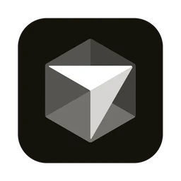
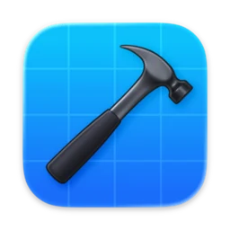
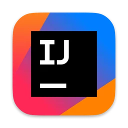

A keyboard launcher for developers working across dozens of repos and every editor.



When you're deep in a problem, every detour through Finder breaks the train of thought. Press ⌥ Space, type three letters, hit ↵ — the right window pops into focus, and your attention stays where it belongs.
Three tools, three jobs. The difference is that Odak knows what a project is.
No seats, no subscription, no usage tiers. Buy it once, use it forever. Upgrades are free for two years.
One-time payment · instant activation · Sparkle auto-updates · 30-day refund
Save fifteen seconds finding the right window, twenty times a day. Do the math.
Developers pay for tools that earn their place on the keyboard. We don't think that relationship should renew every month.
A few things people often ask before they try it.
macOS 26 Tahoe or later, on Apple Silicon and Intel. The Liquid Glass UI relies on macOS 26 APIs that don't backport to older systems.
Raycast knows apps and commands, but not repos. Spotlight indexes everything, which makes it slow at finding any one thing. Odak focuses on projects — which editors have them open, and what each repo lets you do next. Use them side by side.
Cursor, VS Code, IntelliJ IDEA, GoLand out of the box. Xcode and any other editor via a one-line bundle ID in Settings. Terminals and Chrome localhost tabs are tracked too.
.odak vs ~/.odak/config.yaml?The .odak file in your repo root is small — just the IDE to use and any per-project variables. Your custom actions live globally in ~/.odak/config.yaml so you write them once and they apply everywhere. Conditional fields (e.g. fileExists: Package.swift) keep the palette relevant per repo. Read the full reference →
Your project list, search history, and settings live entirely on your Mac in ~/.odak — never synced, never uploaded. Anonymous usage data (which features get used and how often) is on by default so we know what to build next, and you can turn it off any time in Settings → Privacy. Project names, paths, search queries, and file contents never leave your device. Full details →
Every feature is unlocked during the trial. After 14 days, you can buy it for $15 (one time), or simply stop using it. No card up front, no cancellation flow.
30 days, no questions. Email support@odak.fyi.